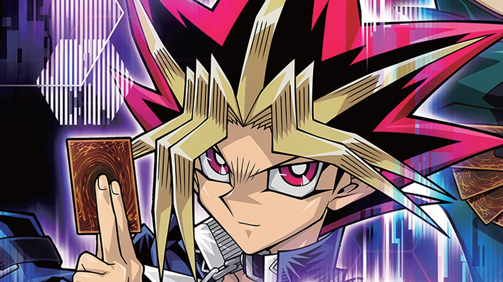

| Home | Our Mission | Furry Friends | Locations Near You | Contact Us |
|---|
Yu-Gi-Oh! (Japanese: 遊☆戯☆王, Hepburn: Yū-Gi-Ō!, lit. "King of Games") is a Japanese manga series about gaming written and illustrated by Kazuki Takahashi. It was serialized in Shueisha's Weekly Shōnen Jump magazine between September 1996 and March 2004. The plot follows the story of a boy named Yugi Mutou, who solves the ancient Millennium Puzzle. Yugi awakens a gambling alter-ego or spirit within his body that solves his conflicts using various games.
Two anime adaptations were produced; one by Toei Animation, which aired from April to October 1998, and another produced by NAS and animated by Studio Gallop
titled Yu-Gi-Oh! Duel Monsters, which aired between April 2000 and September 2004. The manga series has spawned a media franchise that includes multiple spin-off manga
and anime series, a trading card game, and numerous video games. Most of the incarnations of the franchise involve the fictional trading card game known as
Duel Monsters, where each player uses cards to "duel" each other in a mock battle of fantasy "monsters".
This forms the basis for the real life Yu-Gi-Oh! Trading Card Game. Yu-Gi-Oh has become one of the highest-grossing media franchises of all time.

Plot:
Yu-Gi-Oh! tells the tale of Yugi Mutou, a timid young boy who loves all sorts of games, but is often bullied around. One day, he solves an ancient puzzle known as the Millennium Puzzle (千年パズル, Sennen Pazuru), causing his body to play host to a mysterious spirit with the personality of a gambler. From that moment onwards, whenever Yugi or one of his friends is threatened by those with darkness in their hearts, this other Yugi shows himself and challenges them to dangerous Shadow Games (闇のゲーム, Yami no Gēmu, lit. "Games of Darkness") which reveal the true nature of someone's heart, the losers of these contests often being subjected to a dark punishment called a Penalty Game (罰ゲーム, Batsu Gēmu). Whether it be cards, dice, or role-playing board games, he will take on challenges from anyone, anywhere. As the series progresses, Yugi and his friends learn that this person inside of his puzzle is actually the spirit of a nameless Pharaoh from Ancient Egyptian times, who had lost his memories. As Yugi and his companions attempt to help the Pharaoh regain his memories, they find themselves going through many trials as they wager their lives facing off against gamers that wield the mysterious Millennium Items (千年アイテム, Sennen Aitemu) and the dark power of the Shadow Games.
Development
In the initial planning stages of the manga, Takahashi had wanted to draw a horror manga. Although the end result was a manga about games, it was clear that
some horror elements influenced certain aspects of the story. Takahashi decided to use "battle" as his primary theme. Since there had been so much "fighting" manga, he found it difficult to come up with something original. He decided to create a fighting manga where the main character doesn't hit anybody, but also struggled with that limitation. When the word "game" came to mind, he found it much easier to work with.
When an interviewer asked Takahashi if he tried to introduce younger readers to real life gaming culture referenced in the series, Takahashi responded by saying that he simply included "stuff he played and enjoyed", and that it may have introduced readers to role-playing games and other games. Takahashi added that he created some of the games seen in the series. The author stressed the importance of "communication between people," often present in tabletop role-playing games and not present in solitary video games. Takahashi added that he feels that quality communication is not possible over the Internet.
Takahashi had always been interested in games, claiming to have been obsessed as a child and is still interested in them as an adult. In a game, he considered the player to become a hero. He decided to base the Yu-Gi-Oh! series around such games and used this idea as the premise; Yugi was a weak childish boy, who became a hero when he played games. With friendship being one of the major themes of Yu-Gi-Oh!, he based the names of the two major characters "Yūgi" and "Jōnouchi" on the word yūjō (友情), which means "friendship". Henshin, the ability to turn into something or someone else, is something Takahashi believed all children dreamed of. He considered Yugi's "henshin" Dark Yugi, a savvy, invincible games player, to be a big appeal to children.
Takahashi said that the card game held the strongest influence in the manga, because it "happened to evoke the most response" from readers. Prior to that point, Takahashi did not plan for the card game to make more than two appearances.
Takahashi said that the "positive message" for readers of the series is that each person has a "strong hidden part" (like "human potential") within himself or herself, and when one finds hardship, the "hidden part" can emerge if one believes in him/herself and in his/her friends. Takahashi added that this is "a pretty consistent theme."
The editor of the English version, Jason Thompson, said that the licensing of the Yu-Gi-Oh! manga had not been entirely coordinated, so Viz decided to use many of the original character names and to "keep it more or less violent and gory." Thompson said that the manga "was almost unchanged from the Japanese original." Because the core fanbase of the series was, according to Thompson, "8-year-old boys (and a few incredible fangirls)," and because the series had little interest from "hardcore, Japanese-speaking fans, the kind who run scanlation sites and post on messageboards" as the series was perceived to be "too mainstream," the Viz editors allowed Thompson "a surprising amount of leeway with the translation." Thompson said he hoped that he did not "abuse" the leeway he was given. In a 2004 interview, the editors of the United States Shonen Jump mentioned that Americans were surprised when reading the stories in Volumes 1 through 7, as they had not appeared on television as a part of the Yu-Gi-Oh! Duel Monsters anime. Takahashi added "The story is quite violent, isn't it? [laughs]"
English release by 4Kids have been subject to censorship to make it more appropriate for children', for example mentions of death or violence were replaced by references to "being sent to the Shadow Realm".
The 遊戯王 (Yugiō), which is stylized 遊☆戯☆王, means "king of games". The word 遊戯 (yugi, game) is also the name of the protagonist. Kazuki Takahashi has also stated that the character names "Yūgi" and "Jōnouchi" are based on the word 友情 (yūjō "friendship"). This pun was represented with a Yu-Gi-Oh! Trading Card Game card known 友情 YU-JYO (Yūjō Yūjō; in English, "Yu-Jo Friendship"). Yūjō is pointed out by Jōnouchi to Yūgi at the end of the first manga chapter, as "something visible yet invisible" (what's visible is the two of them, what's invisible is their friendship), as a way to tell Yūgi that he wants to be his friend.
Publication:
The original Yu-Gi-Oh! manga by Kazuki Takahashi was serialized in Shueisha's Weekly Shōnen Jump from September 30, 1996 to March 8, 2004. Unlike most other media, it features a variety of different games. The plot starts out fairly episodic and the first seven volumes includes only three instances of Magic & Wizards. In the sixtieth chapter, the Duelist Kingdom arc starts and instances of Magic & Wizards becomes fairly common, and after the DDD arc, it reappears again and becomes part of an important plot point during the Battle City arc. The last arc of the manga focuses on a tabletop role-playing game that replicates the Pharaoh's lost memories, in which the battle system is based on an ancient Shadow Game played in his kingdom (stated in-series to be the precursor of Magic & Wizards and the indirect precursor to card games in general). The editors were Yoshihisa Heishi and Hisao Shimada. Kazuki Takahashi credits Toshimasa Takahashi in the "Special Thanks" column.
The English version of the Yu-Gi-Oh! manga was released in the North America by Viz Media, running in Shonen Jump magazine between 2002 and December 2007. The original Japanese character names are kept for most of the characters (Yugi, Jonouchi, Anzu, and Honda, for instance), while the English names are used for a minor number of characters (e.g. Maximillion Pegasus) and for the Duel Monsters cards. The manga is published in its original right-to-left format and is largely unedited, although instances of censorship appear such as editing out the finger in later volumes. Viz released the first volume of the Yu-Gi-Oh! manga up to the end of the Monster World arc under its original title. Starting from the last chapter of the seventh Japanese volume, the Duelist Kingdom, Dungeon Dice Monsters, and Battle City arcs are released under the title Yu-Gi-Oh!: Duelist, while the Memory World arc was released as Yu-Gi-Oh! Millennium World.
Other media
Yu-Gi-Oh! R
Main article: Yu-Gi-Oh! R
A spin-off manga titled Yu-Gi-Oh! R was illustrated by Akira Ito under Takahashi's supervision. The story is of disputed canonicity and takes place in the original manga's universe, between the Battle City and Millennium World arcs, where Yugi and his friends must stop a man named Yako Tenma who plans to use Anzu Mazaki's body to revive the deceased Pegasus. The spin-off was serialized in V-Jump between April 21, 2004 and December 21, 2007 and was compiled into five tankōbon volumes. Viz Media released the series in North America between 2009 and 2010.
Anime:
Anime franchise overview:
1 Yu-Gi-Oh! 27 April 4, 1998 – October 10, 1998 Hiroyuki Kakudō Toei Animation TV Asahi
Movie Yu-Gi-Oh! March 6, 1999 Junji Shimizu
2 Yu-Gi-Oh! Duel Monsters 224 April 18, 2000 – September 29, 2004 Kunihisa Sugishima Gallop TXN (TV Tokyo)
Movie Yu-Gi-Oh! The Movie: Pyramid of Light November 3, 2004 Hatsuki Tsuji 4Kids Entertainment
3 Yu-Gi-Oh! GX 180 October 6, 2004 – March 26, 2008 Gallop TXN (TV Tokyo)
4 Yu-Gi-Oh! Capsule Monsters 12 September 9, 2006 – November 25, 2006 Eric Stuart 4Kids Entertainment 4Kids TV
5 Yu-Gi-Oh! 5D's 154 + 1 April 2, 2008– March 30, 2011 Katsumi Ono Gallop TXN (TV Tokyo)
Movie Yu-Gi-Oh!: Bonds Beyond Time January 23, 2010 Kenichi Takeshita
6 Yu-Gi-Oh! Zexal 73 + 1 April 11, 2011 – September 24, 2012 Satoshi Kuwahara TXN (TV Tokyo)
7 Yu-Gi-Oh! Zexal II 73 + 1 October 7, 2012 – March 23, 2014 TV Tokyo
8 Yu-Gi-Oh! Arc-V 148 April 6, 2014 – March 26, 2017 Katsumi Ono TXN (TV Tokyo)
Movie Yu-Gi-Oh!: The Dark Side of Dimensions April 23, 2016 Satoshi Kuwabara TV Tokyo
9 Yu-Gi-Oh! VRAINS 120 May 10, 2017 – September 25, 2019 Masahiro Hosoda (#1–13)
10 Yu-Gi-Oh! Sevens TBD April 4, 2020– Nobuhiro Kondo Bridge
This site is currently under construction.
Copyright © 2021 Pawstation.org